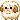

macaron

👑 nathaniel/magpie/jschlatt : macaron. serversona of a voidgenic usdd internal server. not human. is schlatt irl.
🐏 age : deminfinage, forever 21, turning 30.
🕳 pronouns : it/its, that thing, that, zey/zem, ly/lyr/lyri/lyric, no pronouns, 🍒🐙/🍒🐙s, 👑king/👑kings, hebe/hebes, ra/rape, ab/abuse, rät/räts, ra/ram.
💙 labels : abro, jaustenian-velaurian, pan/infinitegender, evian, aegosexual, absgender, aro, a lot ffs. i was going to link our hoard google doc. it's 136 pages long. maybe i won't. First paragraph. Add as many as you want! Second pargraph. Here is how you italicize, bold, make a Third paragraph. The scrollbar will appear once the text exceeds the length of the box, no worries!
🪙 mental health : mixed personality disorder, cluster b and dependent are big, ocd, adhd, autism, udd, a lot tbh
──・──・・𖤐 ・・──・──
🌟 paraphilias : certified omni-traumaphile, ficto-map, vlaviphilia, biasto, a lot but it's either fictional or in-headspace. intraplural map
🐷 extra : fogtive heavy and factkin is great. other stuff too.
blockquote
strikethrough, shrink text, or enlarge it.
|
ੈ♡˳ Josh Dun (twenty one pilots)
ੈ♡˳ Glass Block (Minecraft)
ੈ♡˳ Crying Obsidian (Minecraft) ੈ♡˳ Clado-Canine ੈ♡˳ Royalty ੈ♡˳ Seeker ੈ♡˳ Octopus ੈ♡˳ Ram / Minecraft Ram ੈ♡˳ Antihuman ੈ♡˳ Fogtive ੈ♡˳ Object |
ੈ♡˳ Night Raven College Hearthic
ੈ♡˳ Dream SMP Hearthic ੈ♡˳ FNAF Hearthic ੈ♡˳ Void Hearthic ੈ♡˳ Space Hearthic ੈ♡˳ Ocean Hearthic ੈ♡˳ Veronica Sawyer Synpath ੈ♡˳ Cady Heron Synpath |
|
ˋ°•⁀➷ Nanako Dojima (Persona 4) ❤️
ˋ°•⁀➷ Leona Kingscholar (TWST) ❤️ ˋ°•⁀➷ Jschlatt (RPFicto) 🟠 ˋ°•⁀➷ Jschlatt (DSMP) 🟠 ˋ°•⁀➷ Rammie (Fictobjectum) 🟠 ˋ°•⁀➷ Shadow Weaver (SPOP) 🟠 ˋ°•⁀➷ Markiplier (RPficto) 🟠 ˋ°•⁀➷ Shamura (COTL) 🟠 ˋ°•⁀➷ Naomi Storm (Fictobjectum / Shadow High) 🟠 ˋ°•⁀➷ Victoria Storm (Fictobjectum / Shadow High) 🟠 ˋ°•⁀➷ Genzou Ichihara (Our Wonderland) 🟠 ˋ°•⁀➷ HABIT (Everymanhybrid) 🟠 ˋ°•⁀➷ Philza (RPF/SMP) 🟨 ˋ°•⁀➷ Kuromi (Sanrio) 🟨 ˋ°•⁀➷ Kalim Al-Asim (TWST) 🟨 ˋ°•⁀➷ Jamil Viper (TWST) 🟨 ˋ°•⁀➷ Sobble (Pokemon) 🟨 ˋ°•⁀➷ Inteleon (Pokemon) 🟨 ˋ°•⁀➷ Default Default (CMK) 🟨 ˋ°•⁀➷ Pajama Sam (Self Titled) 🟨 ˋ°•⁀➷ Espurr (Pokemon) 🟩 ˋ°•⁀➷ Bruno Madrigal (Encanto) 🟩 ˋ°•⁀➷ Priya Mangal-Dewan (Turning Red) 🟩 ˋ°•⁀➷ Niki (DSMP) 🟩 ˋ°•⁀➷ Cat (Stray) 🟩
ˋ°•⁀➷ Manlybadasshero (RPFicto)
ˋ°•⁀➷ Rimuru Tempest (Slime) ˋ°•⁀➷ Ted Nivison (RPFicto) ˋ°•⁀➷ Kurtis Conner (RPFicto) ˋ°•⁀➷ Jarvis Johnson (RPFicto) ˋ°•⁀➷ Ryuu (Yakuza Reincarnation) ˋ°•⁀➷ "Gabriel" (Mandela Catalogue) ˋ°•⁀➷ Shuri (Kuma Kuma Kuma Bear) ˋ°•⁀➷ Yan (Mao Zhi Ming) ˋ°•⁀➷ Alec (the man who saved me on my isekai trip was a killer) ˋ°•⁀➷ Hex Maniac Valerie (Pokemon) ˋ°•⁀➷ Psychic (Pokemon) ˋ°•⁀➷ Mona Makino (Mindscanners) ˋ°•⁀➷ Crewel (TWST)
ˋ°•*⁀➷ Boyfriend (Vapenum) ˋ°•*⁀➷ Schlatlas (Plushum) ˋ°•*⁀➷ Music (Conceptum) ˋ°•*⁀➷ Girlfriend (Obsidian) |
ˋ°•⁀➷ Tyler Joseph (RPFicto) ❤️
ˋ°•⁀➷ Quackity (DSMP) 🟠 ˋ°•⁀➷ Danny Gonzalez (RPFicto) 🟨 ˋ°•⁀➷ Wilbur Soot (RPF/SMP) 🟨 ˋ°•⁀➷ Vil Schoenheit (TWST) 🟩
Never Okay with sharing ❤️
Ask before sharing 🟠 Okay with sharing if friends 🟨 Always okay with sharing 🟩
Candy/The Void
Void/The Town |
|
Eclecticism Judaism Hermaphroditus The Outsider Loki Zagreus Yaboku (Yato) Lilith Wicca Infinite Universes Server Specific Religion |
512